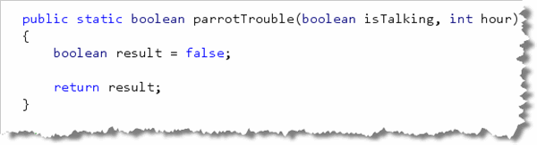

Lt's look at a different selection problem that
require you to handle several different branches. We'll solve this one by
using nested if statements, instead of sequential
if statements. You'll find this problem in
ParrotTrouble.java,
inside this week's code folder.
The Trouble With Parrots
For the parrotTrouble problem, we have a loud talking parrot. The "hour" parameter is the current hour time in the range 0..23. We are in trouble with our neighbors if the parrot is talking and the hour is before 7 or after 20. Your function should return true if we are in trouble.
Step 1: Guess What?
I don't even have to tell you this part, do I? By now you should
be able to whip out that skeleton without even being asked:

Of course, since it's a Boolean function, you should pass about half of the tests. If you don't, just change the default value forresult from false to true.
(A little test-taking tip!)
Step 2: Examine the Parameters
Notice now that we have two kinds of parameters; in other words, we're going to test two things:
- Whether the parrot is talking or singing
- What time it is
That's kind of like the income tax example, where we first
tested the filing status and then tested the income level.
In this case, we want to write an if statement that
tests if the bird is talking. If it is, we'll set result
to false like this:
 Of course none of you would think of writing
Of course none of you would think of writing if (isTalking == true)
because that would be redundant, right?
Good. I thought not! Now let's test our code:
 Well, 75% is pretty good, but it looks like our
Well, 75% is pretty good, but it looks like our if statement
actually broke some tests that worked before. It says that we're in trouble
even though it's now 7 AM, and our parrot should be able to squawk without
causing a ruckus!
Looks like we need a nested if statement!
Step 3: A Nested Selection
After we check to see if the parrot is talking, we need to check
again and see if it's actually "no-talking" time. We do that by
adding a nested if statement to our code,
like this:

Once you have created the program, compile it and then Check your results. Keep trying until you get a perfect score.